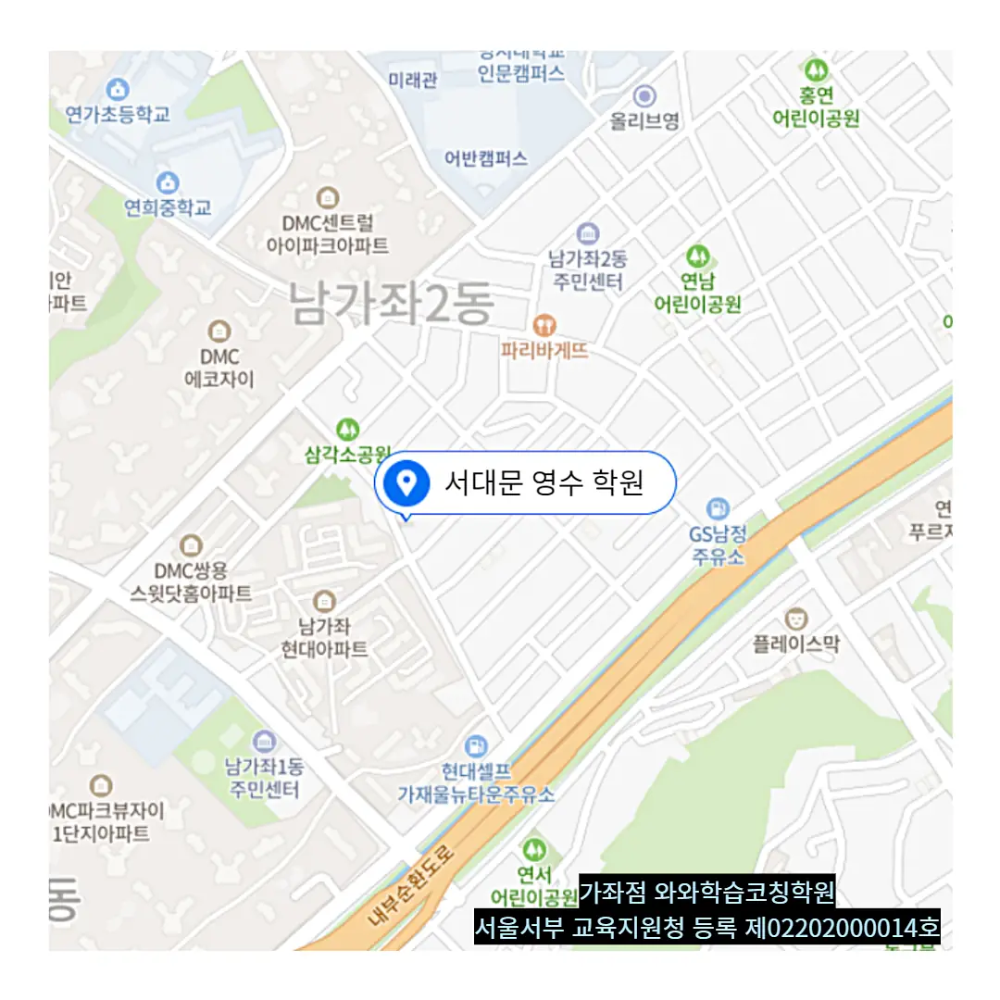

남가좌동 수포자학원
남가좌동 수포자학원
하루 목표는 ‘영어 독해 3지문 + 틀린 문제 분석’, 주간 목표는 ‘문법 총정리 키워드 복기’처럼 구체화하며, 학습 목표를 감정과 연결하는 연습도 병행한다. 또한, 지문 내 강조 정보와 문제 요구 정보의 일치성 평가를 통해, 학생들은 학습 내용을 정확하게 파악할 수 있습니다. 남가좌동 수포자학원은 많은 학생들이 꾸준한 학습 계획을 세우고 실천하는 데 어려움을 겪고 있으며, 특히 일정한 루틴 없이 공부를 시작했다가 쉽게 포기하는 경우가 빈번하게 나타납니다. 남가좌동 수포자학원은 특히 국어 지문에는 표면적으로는 자연스럽게 보이지만 출제자의 의도적 함정이 배치된 구간이 존재하며 학습자는 지문 중간의 반전 논리, 어휘의 이중 의미, 문학 갈래 혼합 작품의 은유적 구조 등을 집중적으로 분석함으로써 감정 판단이 아닌 논리적 해석에 익숙해져야 합니다. 문장 끝에 느낌표나 물음표를 써서 어조만 바꾸는 종결 기법을 통해, 학습의 흥미를 끌어낼 수 있다. 이곳은 단순한 공간을 넘어서 정신의 전환 지점이 되며, 한 번 들어가면 ‘공부 상태’로 강제 전환되는 심리적 압력이 작동한다. 일상적인 방학 스케줄 속에서 의도적으로 ‘학습 전용 시간과 장소’를 확보함으로써, 대비의 본질을 단순 암기가 아닌 체계적 준비로 전환하게 되기 때문이다.